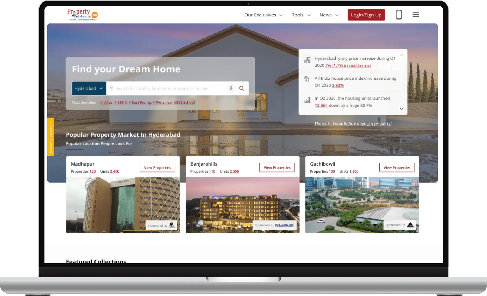
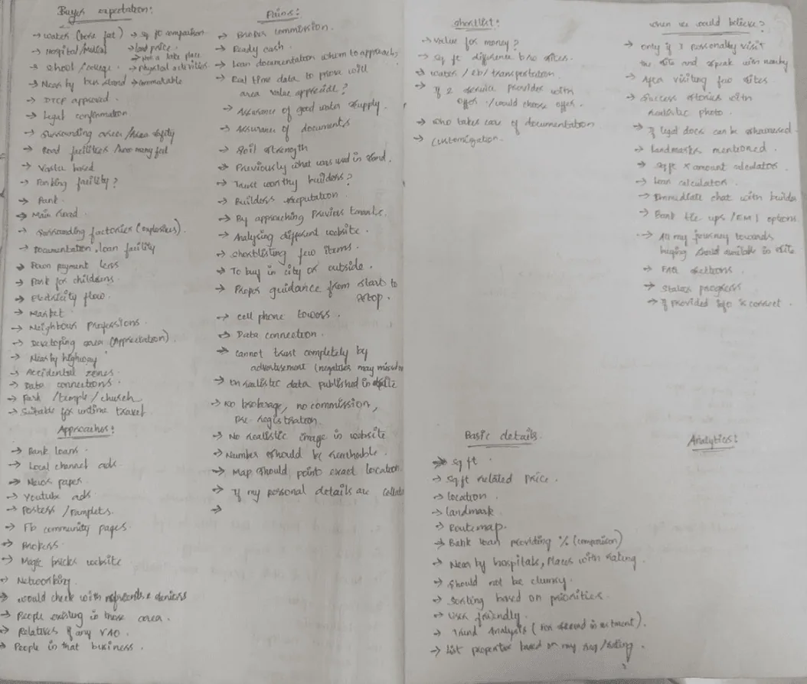
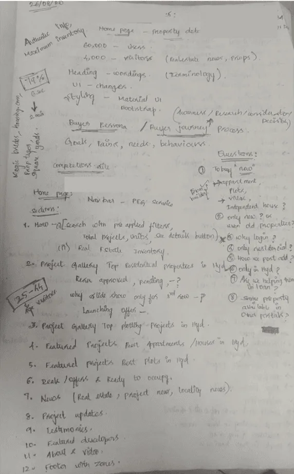
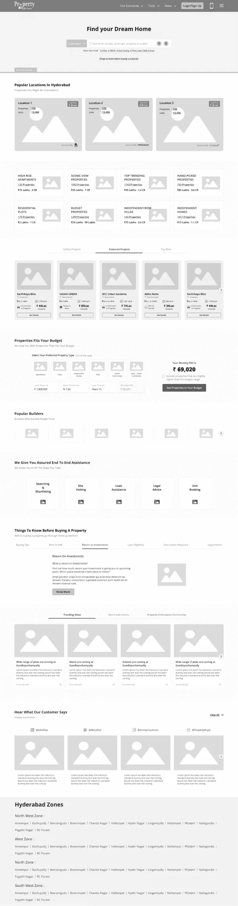
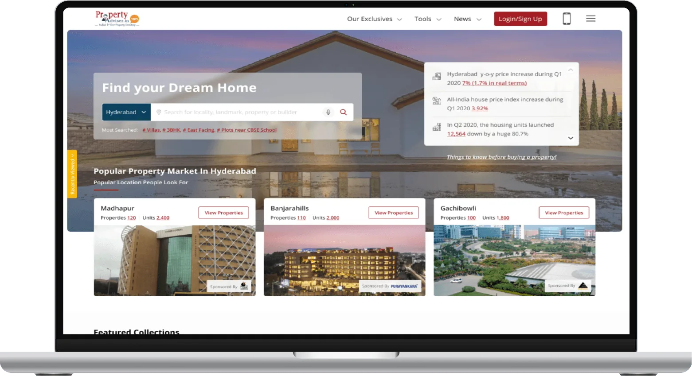
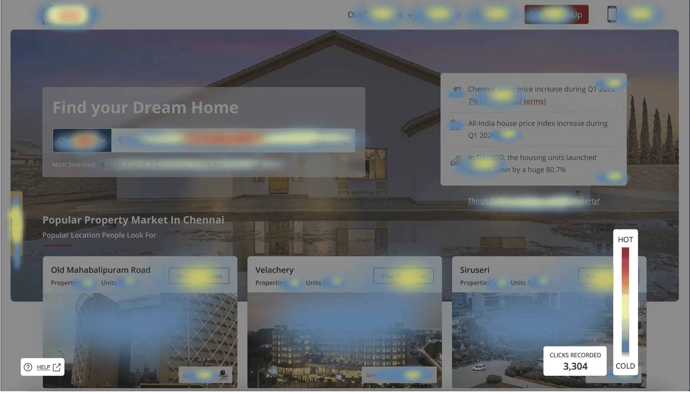

Property Advisor
Web & mobileReal estate

About the project
Buying a home you can actually trust.
Property Advisor set out to fix the trust problem in buying property online: unreliable agents, duplicate listings, hidden fees and builders who never call back.
Over six months I led research, personas, journey mapping, information architecture, wireframes, high-fidelity design and usability testing for the web platform.
- Role
- Designer, UI and interaction,
Prototyper - Duration
- 6 months
- Platform
- Responsive web, app
- Market
- Hyderabad · Chennai
Buying a home shouldn’t mean guessing who to trust.
Overview
Problem
Homebuyers struggle to find trustworthy agents and legitimate websites, pay high brokerage fees, and find that properties don’t match their adverts. Duplicate listings, missing details on utilities and nearby amenities, uncertain legal documents and poor communication from builders make it worse.
Outcome
Property Advisor launched successfully. Users praised the accuracy of property details and the better communication with builders.
Six months, five overlapping phases.
Design process
Why are we doing this?
Research
Research uncovered the real problems and needs of people buying property. It aimed to understand pain points and expectations, find gaps in existing platforms, and gather insight for a user-centred app.
User interviews
People aged 25 to 45 were the most frequent users of real estate websites, so I interviewed 6 to 10 people in that range. Requirements and competitive analysis helped me ask focused questions and uncover their difficulties.
Requirement gathering
I worked with the clients to understand their wants and needs, asked many questions and cleared up every doubt, then validated those needs and how to achieve them.


What buyers told us.
Key findings
- 1
Goals of the research
Discover what homebuyers and renters want, the challenges they face, and where existing platforms fall short.
- 2
How we researched
Online surveys, in-depth interviews with buyers, renters and agents, competitive analysis and market research into trends and behaviour.
- 3
What we learned
Users want trustworthy agents, verified details, transparent pricing, richer property information, better contact with builders and no duplicate listings.
Hypothesis
If property details are verified, agents are trustworthy, pricing is transparent and duplicates are gone, people will trust the platform more and use it more.
Who we designed for.
User persona
Rational buyer · 25–45 age group (60%)
The Noyal family
“Buying a home for the first time is a bit overwhelming!”
Background
Noyal is 35, married with one child, and a senior consultant at an IT services company in Chennai with 10 years of experience. He balances work and family well and enjoys cricket and football with friends.
Goals
- Buy a property that becomes an asset for his family
- All utilities available: water, electricity, gas
- Close to schools, hospitals and places of worship
- Easy to commute to
- Priced at market value and within budget
Expectations
- An agent who guides him from start to finish
- Genuine information about properties
- Personal visits to shortlisted sites
- Help with loans and documents
Needs
- Exact location, landmarks and route map
- Legal documents shown upfront
- Filters, shortlisting and comparison
- Instant chat or call with builders
- Loan details and an EMI calculator
- Builder reputation and contacts
Pains & frustrations
- Finding a genuine website among search results
- Brokerage and advance payments before visits
- Adverts that don’t match the property
- Duplicate listings
- Builders who don’t answer or follow up
- Unnecessary personal details collected
From first idea to decision.
Journey mapping
| Stage | Awareness | Search | Consider | Compare | Decide |
|---|---|---|---|---|---|
| Actions | Ask friends, relatives and colleagues | Search for properties | Check with friends and colleagues for opinions | Compare properties on different websites; how much loan am I eligible for? | Decide to buy |
| Touchpoints | Newspapers, ads, posters, pamphlets | Web ads, YouTube ads, Instagram and Facebook community pages | Web portal, mobile app, chat or call support | Reaching out to brokers or people in the business | Reaching out to builders |
| Emotions | Hopeful | Curious | Uncertain | Doubtful | Confident |
| Pain points | Friends may not know much about the property | Is the advertised information genuine? | Finding someone who can really help | Missing details, legal proofs, loan and EMI information | No support from builders with loans and documents |
| Opportunities | Advertise in both physical and digital channels | Promote the website | Assure that advertised information is genuine | A guide from start to finish; real-time value data | Builders follow up and help with loans and legal work |
From wireframe to final design.
Design
Card sorting and information architecture shaped a home page that puts search first, then popular locations, collections, budget tools, builders and end-to-end assistance.


Drag or scroll sideways
Testing with real behaviour.
Usability testing
After several iterations, heatmaps and recorded user sessions showed where people clicked and struggled, and I fixed the usability issues they revealed.

Final thoughts.
Takeaways
- 1
Key learnings
Trust and transparency shaped every design decision. Verified information and simple communication raised satisfaction, and constant feedback kept the platform user-centred.
- 2
Project reflection
A flexible mindset helped turn challenges into inventive solutions and kept the project resilient.
- 3
Acknowledgments
Thanks to my team and mentors for their guidance, and to the users whose research and testing feedback shaped the app.
Next project